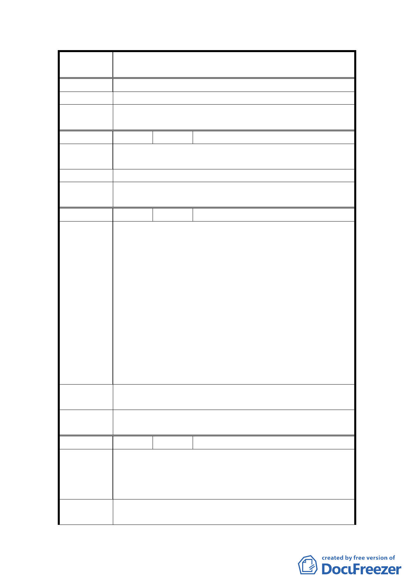

案
名
變更臺北市士林區三玉段一小段 22-3 地號等體育場用
地（天母運動公園）為臺北市立體育學用地主要計畫案
致使公園漸失。
建 議 辦 法 堅決反對改變地目
委員會決
議
同編號 1。
編 號 10 陳情人 許寶秀
陳情理由
反對建體育學院，保留居民運動場空間，請尊重天母居
民、北區居民的心聲，居民才是頭家。
建 議 辦 法 不希望變更地目
委員會決
議
同編號 1。
編 號 11 陳情人 朱瑞三
1.市府開闢天母運動公園有年，不但近悅遠來者逐漸增
加，尤其該公園左有新建之新光三越購物中心，右鄰
知名之高島屋百貨公司，本省人民及國外旅遊者慕名
前來日益加多。他（她）們除購物外，「天母運動公園」
可說是其旅遊休閒最佳之處，因此，來人無不盛讚市
府官員有遠見，有魄力、有作為。故居住該公園四周
陳 情 理 由 里民，實感與有榮焉。
2.未料晴天霹靂，市府主管官員不察實情，僅憑主觀意
識，竟將「天母運動公園」區塊，變更為「體育學院」，
表面上美其名是說明會，實則強要里民為其背書，似
此里民不能接受。
3.身為市府官員，因作業草率，引起廣大民怨者，建請
撤換。
建議辦法
「天母運動公園」之名稱及範圍，維持原狀不變，但應
加強美化及設施。
委員會決
議
同編號 1。
編 號 12 陳情人 三玉里賴小姐
1.校舍已蓋好了，才要將〝公共設施用地〞變更為〝學
陳情理由
校用地〞，這樣合法嗎。
2.校舍已蓋了，都發局才發文說：計畫案公開展示 1 個
月，現在校舍已蓋好了，如有疑義，提出有效果嗎。
委員會決
議
同編號 1。
14